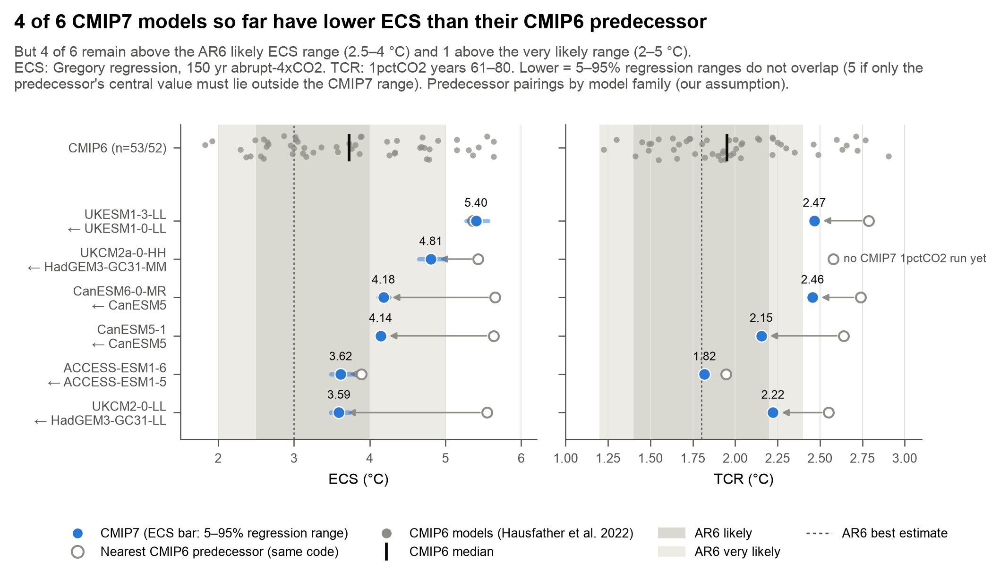
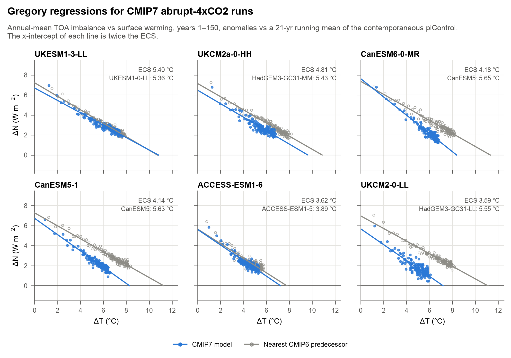
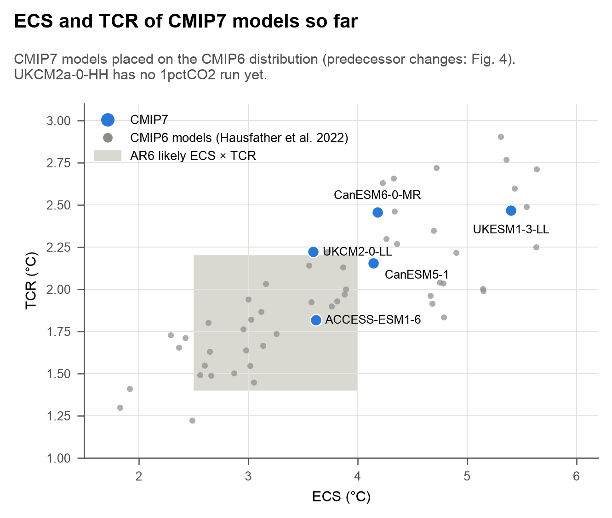
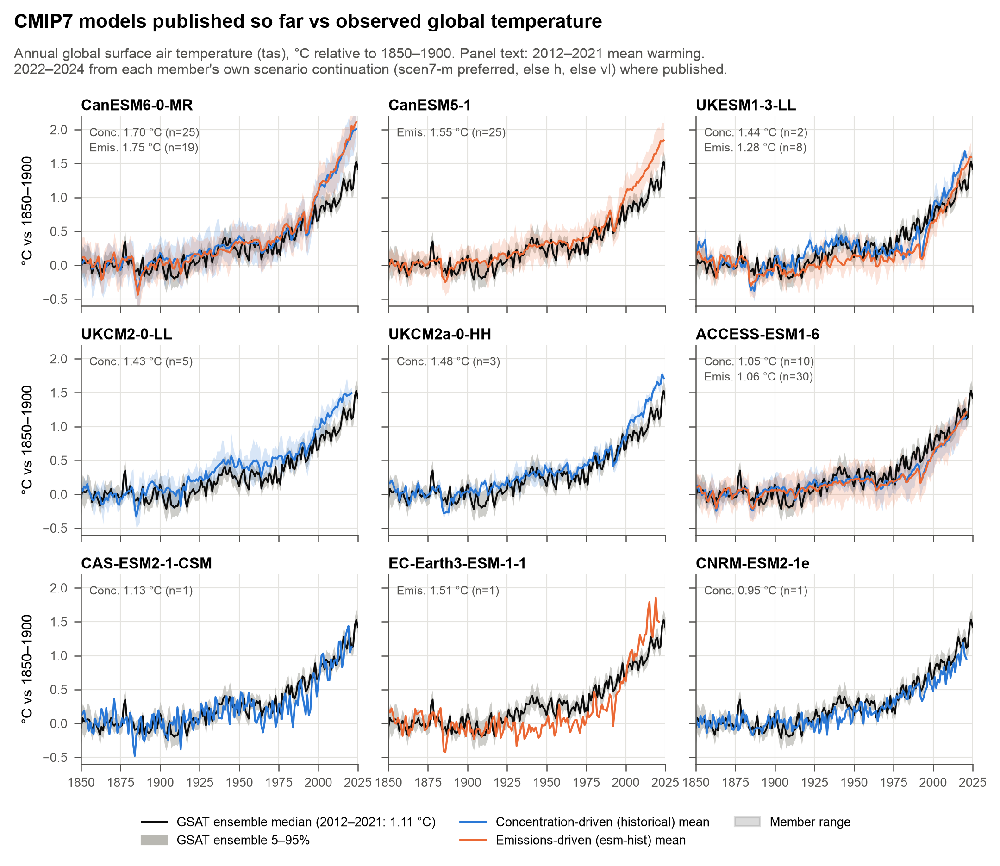
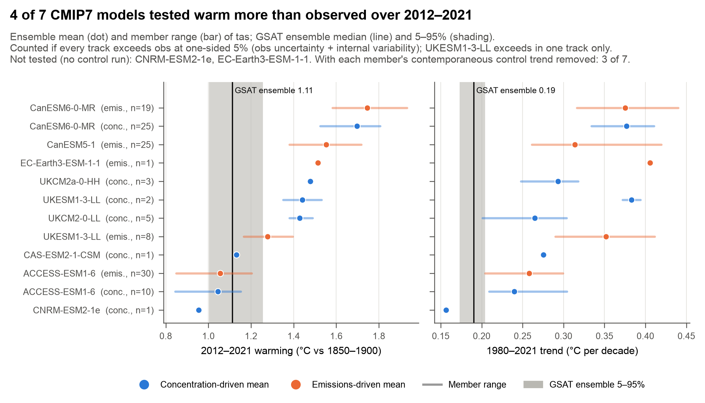
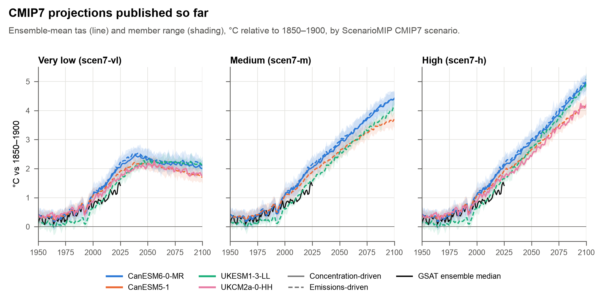

CMIP7 first look: warming and climate sensitivity
The first 9 CMIP7 models on ESGF, compared with the GSAT ensemble over the historical period and with CMIP6 for effective climate sensitivity (ECS) and transient climate response (TCR). The sample is small (6 of 9 models from UK, Canadian and Australian centres), so these are model-by-model results, not an ensemble assessment.
Key results
4 of 6 CMIP7 models have a lower 150-yr Gregory ECS than their nearest CMIP6 predecessor, with non-overlapping 5–95% regression ranges (5 under the looser test that only the predecessor's value lies outside the CMIP7 range). CMIP7 ECS spans 3.59–5.40 °C.
4 of 6 remain above the AR6 likely range (2.5–4 °C) and 1 above very likely (2–5 °C). For comparison, 40% of CMIP6 models were above 4 °C and 15% above 5 °C.
The GSAT ensemble gives 1.11 °C. 4 of 7 testable models warm significantly more in every published track (CanESM5-1, CanESM6-0-MR, UKCM2-0-LL, UKCM2a-0-HH). UKESM1-3-LL does so in one track only. Removing the control-run drift leaves 4 of 7; removing each member's contemporaneous control-run trend, which also contains centennial variability, gives 3 of 7 (UKCM2-0-LL drops out).
The same code reproduces published CMIP6 ECS (Zelinka et al. 2020) to ≤ 0.014 °C and TCR (AR6 Table 7.SM.5) to ≤ 0.004 °C on the three validation models.
Climate sensitivity
ECS is the 150-year Gregory estimate from abrupt-4xCO2, with anomalies taken against a 21-yr running
mean of the contemporaneous piControl (Zelinka et al. 2020 convention). TCR is the mean of years 61–80 of
1pctCO2, with the control drift removed by a linear fit (the ESMValTool convention behind AR6 Table 7.SM.5).
Each CMIP7 model is paired with its nearest CMIP6 predecessor by model family. The pairings are our judgement, not
an official lineage, and the predecessors are recomputed with the same code so the differences are method-consistent.
CanESM5-1 is CanESM5.1-p2 (Sigmond et al. 2023), whose atmosphere
was retuned to an effective climate sensitivity of 4.09 K (their value; 4.14 °C here) and which is
also a CMIP6 model (CMIP6 source_id CanESM5-1, release year 2022). Its lower ECS against CanESM5 (5.63 °C) therefore dates from that retuning, not from CMIP7.
Across CMIP6, 53 models had a median ECS of 3.72 °C and 52 a median TCR of 1.95 °C (Hausfather et al. 2022 compilation). 3 of 5 CMIP7 models with a 1pctCO2 run have TCR above the AR6 likely range (1.4–2.2 °C).

| CMIP7 model | Member | ECS (5–95%) | ECS yr 21–150 | ERF₂ₓ | λ | TCR | CMIP6 predecessor | ECS | TCR | ΔECS |
|---|---|---|---|---|---|---|---|---|---|---|
| UKESM1-3-LL | r1i1p1f1 | 5.40 5.27–5.56 | 5.93 | 3.35 | -0.62 | 2.47 | UKESM1-0-LL | 5.36 | 2.79 | 0.04 |
| UKCM2a-0-HH | r1i1p1f1 | 4.81 4.65–4.99 | 5.40 | 3.24 | -0.67 | – | HadGEM3-GC31-MM | 5.43 | 2.58 | -0.62 |
| CanESM6-0-MR | r1i1p1f1 | 4.18 4.12–4.26 | 4.42 | 3.81 | -0.91 | 2.46 | CanESM5 | 5.65 | 2.74 | -1.47 |
| CanESM5-1 | r1i1p2f1 | 4.14 4.09–4.20 | 4.31 | 3.37 | -0.81 | 2.15 | CanESM5 | 5.63 | 2.64 | -1.49 |
| ACCESS-ESM1-6 | r1i1p1f1 | 3.62 3.49–3.78 | 4.31 | 2.81 | -0.78 | 1.82 | ACCESS-ESM1-5 | 3.89 | 1.95 | -0.27 |
| UKCM2-0-LL | r1i1p1f1 | 3.59 3.48–3.73 | 3.88 | 2.84 | -0.79 | 2.22 | HadGEM3-GC31-LL | 5.55 | 2.55 | -1.95 |
ECS range: fixed-design circular block bootstrap of the regression residuals (10-yr blocks, 2,000 resamples); it reflects regression sampling only. "ECS yr 21–150" is the fit excluding the first 20 years; it is larger for 6 of 6 models, the usual pattern-effect curvature. ΔECS is coloured only when the two models' 5–95% ranges do not overlap. The ranges come from one realisation each and exclude realisation-to-realisation spread in ECS, so they understate the true uncertainty of each difference.


Historical warming
Each member is expressed relative to its own 1850–1900 mean, and each model is summarised by the mean of its
members' metrics. Concentration-driven (historical) and emissions-driven (esm-hist) runs are
kept separate. Runs end in 2021; 2022–2024 come from each member's own scenario continuation, joined by the parent
metadata in the scenario files. The choice of scenario changes ensemble-mean 2015–2024 warming by at most
0.021 °C.
z compares the model ensemble mean with the observations, given observational uncertainty (spread of the 10,000-member GSAT ensemble) and internal variability (member spread with ≥ 5 members, otherwise the control run). A model counts as warmer than observed if z > 1.645 (one-sided 5%) in every published track. Models consistent with observations in all tracks: ACCESS-ESM1-6, CAS-ESM2-1-CSM. Not tested (one member, no control run): CNRM-ESM2-1e, EC-Earth3-ESM-1-1. For the 1980–2021 trend, 6 of 7 testable models warm faster than observed (0.191 °C per decade).


| Model | Track | n | 2012–2021 (°C, range) | z | 2015–2024 (°C) | Trend 1980–2021 (°C/dec) | z | Trend 1950–2021 | 2012–2021 drift-corr. |
|---|---|---|---|---|---|---|---|---|---|
| GSAT ensemble | obs | 10,000 | 1.11 1.00–1.26 | 1.24 | 0.191 | 0.147 | |||
| CanESM6-0-MR | Emissions-driven | 19 | 1.75 1.58–1.93 | 5.5 | 1.89 | 0.375 | 5.4 | 0.228 | – |
| CanESM6-0-MR | Concentration-driven | 25 | 1.70 1.52–1.81 | 5.5 | 1.85 | 0.377 | 9.3 | 0.223 | 1.70 |
| CanESM5-1 | Emissions-driven | 25 | 1.55 1.38–1.72 | 3.9 | 1.68 | 0.314 | 3.5 | 0.200 | 1.56 |
| EC-Earth3-ESM-1-1 | Emissions-driven | 1 | 1.51 1.51–1.51 | n/a | – | 0.406 | n/a | 0.242 | – |
| UKCM2a-0-HH | Concentration-driven | 3 | 1.48 1.47–1.49 | 3.7 | 1.58 | 0.293 | 4.0 | 0.179 | 1.63 |
| UKESM1-3-LL | Concentration-driven | 2 | 1.44 1.35–1.53 | 1.9 | – | 0.383 | 3.5 | 0.191 | 1.45 |
| UKCM2-0-LL | Concentration-driven | 5 | 1.43 1.38–1.49 | 3.3 | – | 0.265 | 1.7 | 0.163 | 1.41 |
| UKESM1-3-LL | Emissions-driven | 8 | 1.28 1.17–1.40 | 1.4 | 1.42 | 0.352 | 4.0 | 0.180 | 1.26 |
| CAS-ESM2-1-CSM | Concentration-driven | 1 | 1.13 1.13–1.13 | 0.1 | – | 0.275 | 2.5 | 0.150 | 0.99 |
| ACCESS-ESM1-6 | Emissions-driven | 30 | 1.06 0.85–1.20 | -0.5 | – | 0.258 | 2.6 | 0.138 | 1.05 |
| ACCESS-ESM1-6 | Concentration-driven | 10 | 1.05 0.84–1.15 | -0.5 | – | 0.240 | 1.5 | 0.134 | 1.04 |
| CNRM-ESM2-1e | Concentration-driven | 1 | 0.95 0.95–0.95 | n/a | – | 0.157 | n/a | 0.121 | – |
No blending or masking adjustment is applied to model tas (project convention: the GSAT ensemble is compared
directly with model tas). Any such adjustment would lower model warming, so it can only shrink the warm biases shown here.
historical_metrics.csv lists the fractional reduction in model warming that would make each warm model
consistent. The drift-corrected column removes the full-record control-run trend (the drift itself). Removing each member's
contemporaneous 172-yr control trend instead, which mixes drift with centennial variability, is a second sensitivity
(_driftcorr_seg columns).
Projections
4 models have scenario runs joined to a published historical parent so far, through 2100 for scen7-h, scen7-m and scen7-vl. Under scen7-h, 2081–2100 warming ranges from 3.89 to 4.65 °C across models and tracks; under scen7-vl, from 1.81 to 2.21 °C. 4 of these 4 warm more than observed over 2012–2021 in at least one track, so they should not be read as a CMIP7 projection range.

| Model | Scenario | n | 2041–2060 (°C) | 2081–2100 (°C) |
|---|---|---|---|---|
| CanESM6-0-MR | esm-scen7-h | 19 | 3.01 2.90–3.19 | 4.65 4.51–4.78 |
| UKESM1-3-LL | esm-scen7-h | 8 | 2.72 2.59–2.88 | 4.46 4.36–4.58 |
| CanESM5-1 | esm-scen7-h | 25 | 2.65 2.57–2.80 | 3.94 3.79–4.11 |
| CanESM6-0-MR | esm-scen7-m | 19 | 2.94 2.82–3.02 | 4.20 4.10–4.36 |
| UKESM1-3-LL | esm-scen7-m | 6 | 2.51 2.41–2.59 | 3.79 3.70–3.95 |
| CanESM5-1 | esm-scen7-m | 25 | 2.60 2.52–2.70 | 3.55 3.45–3.65 |
| CanESM6-0-MR | esm-scen7-vl | 19 | 2.37 2.24–2.48 | 2.21 2.07–2.30 |
| UKESM1-3-LL | esm-scen7-vl | 8 | 2.21 2.10–2.26 | 2.18 2.06–2.27 |
| CanESM5-1 | esm-scen7-vl | 25 | 2.14 2.07–2.25 | 1.81 1.68–1.91 |
| CanESM6-0-MR | scen7-h | 25 | 2.95 2.82–3.12 | 4.57 4.48–4.72 |
| UKCM2a-0-HH | scen7-h | 2 | 2.49 2.46–2.53 | 3.89 3.89–3.90 |
| CanESM6-0-MR | scen7-m | 25 | 2.87 2.73–3.00 | 4.20 4.07–4.33 |
| CanESM6-0-MR | scen7-vl | 25 | 2.31 2.22–2.43 | 2.10 1.97–2.23 |
| UKCM2a-0-HH | scen7-vl | 2 | 2.10 2.06–2.13 | 1.85 1.84–1.87 |
Validation and data checks
Before any CMIP7 numbers were computed, the code was run on three CMIP6 models with published values. The pre-registered tolerance was ±0.05 °C. ECS matched Zelinka et al. (2020) v2.2 to ≤ 0.014 °C (ERF₂ₓ ≤ 0.003 W m⁻², λ ≤ 0.001 W m⁻² K⁻¹); across all 7 recomputed CMIP6 runs the largest ECS difference is 0.020 °C. TCR with the linear control fit matched AR6 Table 7.SM.5 to ≤ 0.004 °C and Hausfather et al. (2022) to ≤ 0.027 °C. With a running-mean control instead, TCR was up to 0.067 °C high, so the linear convention is used for TCR.
| CMIP6 run | ECS (ours) | ECS Zelinka v2.2 | Δ | ERF₂ₓ | Δ | TCR linear | TCR AR6 | Δ | TCR rm21 | Δ vs H22 |
|---|---|---|---|---|---|---|---|---|---|---|
| CanESM5 r1i1p1f1 validation | 5.653 | 5.639 | 0.014 | 3.678 | 0.003 | 2.739 | 2.74 | -0.001 | 2.775 | 0.063 |
| UKESM1-0-LL r1i1p1f2 validation | 5.358 | 5.359 | -0.001 | 3.607 | -0.001 | 2.786 | 2.79 | -0.004 | 2.836 | 0.067 |
| ACCESS-ESM1-5 r1i1p1f1 validation | 3.889 | 3.884 | 0.005 | 2.830 | 0.000 | 1.947 | 1.95 | -0.003 | 2.006 | 0.035 |
| CanESM5 r1i1p2f1 | 5.633 | 5.616 | 0.017 | 3.640 | 0.000 | 2.640 | – | – | 2.622 | – |
| HadGEM3-GC31-LL r1i1p1f3 | 5.545 | 5.546 | -0.000 | 3.488 | 0.001 | 2.552 | 2.55 | 0.002 | 2.528 | 0.038 |
| HadGEM3-GC31-MM r1i1p1f3 | 5.433 | 5.440 | -0.007 | 3.569 | 0.002 | 2.579 | 2.58 | -0.001 | 2.649 | 0.052 |
| CNRM-ESM2-1 r1i1p1f2 | 4.774 | 4.794 | -0.020 | 2.954 | -0.016 | 1.853 | 1.86 | -0.007 | 1.884 | 0.051 |
- 2,411 of 2,419 files matched their ESGF sha256 checksum. The other 8 (CanESM5-1 piControl) were rewritten on the CCCma node after indexing; they are complete and readable but cannot be checksum-verified, so CanESM5-1's ECS rests on the server copy.
- Scenario runs are joined to their historical parent by metadata, not variant label: some UKESM1-3-LL esm-scen7 f1
members branch from f2 esm-hist members. Runs whose declared parent is unpublished are not used
(
splice_check.csv). - Version tags: CanESM5-1 datasets carry
v20190429, but their global attributes identify CMIP7 output created in 2026. UKESM1-3-LLhistoricalis forcing variant f2, while its control and idealised runs are f1. - Some datasets in the ESGF inventory are daily-maximum or daily-minimum brandings (
tmaxavg,tmax) rather than means, and are excluded. This removes an apparent CNRM-ESM2-1eesm-histand CAS-ESM2-1-CSMscen7-vl.
| Model | Institution | historical | esm-hist | scen7 h/m/vl | esm-scen7 h/m/vl | abrupt-4xCO2 radiation | 1pctCO2 |
|---|---|---|---|---|---|---|---|
| ACCESS-ESM1-6 | ACCESS-Consortium | 10 | 30 | –/–/– | –/–/– | ✓ | ✓ |
| CAS-ESM2-1-CSM | CAS | 1 | – | –/–/– | –/–/– | – | – |
| CNRM-ESM2-1e | CNRM-CERFACS | 1 | – | –/–/– | –/–/– | – | – |
| CanESM5-1 | CCCma | – | 25 | –/–/– | 25/25/25 | ✓ | ✓ |
| CanESM6-0-MR | CCCma | 25 | 19 | 25/25/25 | 25/25/25 | ✓ | ✓ |
| EC-Earth3-ESM-1-1 | EC-Earth-Consortium | – | 1 | –/–/– | 1/–/1 | – | – |
| UKCM2-0-LL | UKNCSP | 5 | – | –/–/– | –/–/– | ✓ | ✓ |
| UKCM2a-0-HH | UKNCSP | 3 | – | 2/–/2 | –/–/– | ✓ | – |
| UKESM1-3-LL | UKNCSP | 2 | 8 | 1/–/– | 8/6/8 | ✓ | ✓ |
Caveats
- The sample is early and non-random. Counts and ranges here describe these 9 models, not CMIP7.
- 150-yr Gregory ECS is an effective sensitivity and understates the long-run equilibrium for models with strong pattern effects.
- CMIP7 forcing differs from CMIP6, so CMIP6→CMIP7 differences in historical warming mix model and forcing changes. ECS and TCR come from idealised CO₂ runs and are not affected.
- Emissions-driven runs simulate their own CO₂, so differences between their warming and that of the concentration-driven runs partly reflect CO₂.
- The consistency test assumes realistic model internal variability. For models with 2–3 members it relies on the control run.
Sources
- CMIP7 output via ESGF, per the CMIP7 user guidance.
Dataset IDs, versions and tracking IDs:
outputs/cmip7_dataset_table.csv. - Hausfather, Marvel, Schmidt, Nielsen-Gammon & Zelinka (2022), Nature 605, 26–29; data Zenodo 6476375.
- Zelinka et al. (2020), GRL; values v2.2 from github.com/mzelinka/cmip56_forcing_feedback_ecs.
- Sigmond et al. (2023), GMD 16, 6553.
- IPCC AR6 WGI Chapter 7 and Table 7.SM.5; SPM A.1.2 for 2011–2020 warming.
- CMIP6 model output from the Pangeo
gs://cmip6archive.
Full methods, parameter choices and sensitivity tests: METHODS.md. Code, derived data and the pipeline to reproduce every number and figure: https://github.com/hausfath/cmip7-analysis.